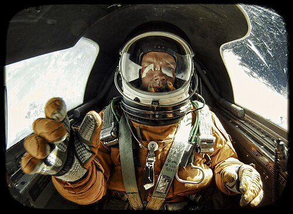

UAP-046 // CASE REVIEW
U-2 and high-altitude aircraft sightings
Secret conventional aircraft explain some misidentifications, not all cases and not alien technology.


The claim
The exact claim is: CIA histories say U-2 and OXCART flights explained many 1950s–60s reports, sometimes used as blanket debunking. This dossier treats “UAP” as a report category, not a cause. Evidence that an event was reported differs from evidence identifying its stimulus, and both differ from proof of non-human technology.
Timeline & provenance
Provenance and sequence: High-altitude flights began in the 1950s; CIA later assessed many sightings correlated with secret aircraft operations. Contemporary records may preserve exact wording better than late recollections, though official files can omit context. Repeated versions of one story are not independent corroboration simply because several people repeat them.
What is independently documented
The documented core is limited: CIA histories document programs and likely explanations for some reports, not case-by-case identification of every sighting. An agency file proves institutional attention, not that every statement in it is true. This distinction matters when a report is incomplete, secondhand, or assembled long after the event.
Physical and sensor limits
The evidence has significant limits: Retrospective correlations may rely on incomplete logs and cannot explain cases outside matching dates or routes. Without calibrated range, angular size, synchronized clocks, known sensor settings, and raw rather than edited data, estimates of speed, shape, and acceleration may be unreliable.
Mundane and competing explanations
Competing explanations should be tested, not assumed. Aircraft near sunset appear bright and large; each explanation still needs specific timing and position. A conventional account must fit timing, direction, environment, and reliable observations. Failure to select one does not make an extraterrestrial explanation the default, especially when basic metadata are missing.
Calibrated status
Assessment: Secret conventional aircraft explain some misidentifications, not all cases and not alien technology. The conclusion is limited to public evidence. “Unidentified” means that available data did not yield a dependable identification; it is not synonymous with extraterrestrial, interdimensional, or technologically superior. Secrecy alone is not evidence of alien technology.
What would change the view?
Useful evidence would include Declassified flight logs, sighting positions, and atmospheric modeling could test individual correlations. Original files with metadata, independently synchronized observations, reproducible analysis, and transparent custody for physical samples are more valuable than additional retellings.
Sources & further reading
- U.S. National Archives, Air Force UFO recordsPrimary records document reports and inquiry, not extraterrestrial identification.
- AARO Historical Record Report, Volume I (2024)A government historical review reports no verifiable reverse-engineering evidence; scope and institutional limits apply.
- CIA Reading Room, UFO collectionDeclassified memoranda document agency discussion; the selective files do not validate a reported cause.